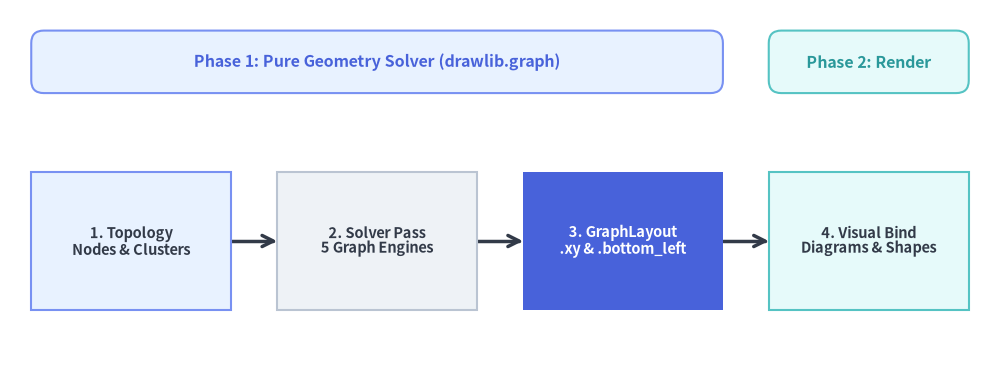
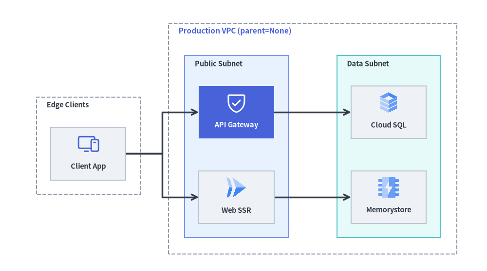

Declarative Graph Auto-Layout Engine (drawlib.graph)
Visualizing cloud topologies, data pipelines, and hierarchical networks manually requires computing dozens of (x, y) coordinates, container envelopes, and connector waypoints. Conversely, traditional graph visualization tools (such as Graphviz or Cytoscape) depend on external C/C++, Java, or Node.js runtimes and lock visual styling inside an opaque rendering black box.
To bridge both worlds, Drawlib provides drawlib.graph: a pure-Python coordinate and layout solver (get_layout()) that resolves topological ranks, nested cluster boundaries, and Manhattan waypoints in memory with zero external binaries, powering a decoupled 2-Step Workflow alongside drawlib.diagrams and drawlib.shapes.

Source Code
from drawlib.canvas import save, setup
from drawlib.diagrams.flow import FlowDiagram, Process
from drawlib.graph import LayerGraph
from drawlib.shapes import rectangle
from drawlib.styles import Styles
setup(width=120, height=44)
# Step 1: Solve pipeline stage coordinates with LayerGraph
g = LayerGraph(
direction="LR",
rank_sep=5.5,
default_node_width=24.0,
default_node_height=16.5,
)
g.edge("topology", "solver")
g.edge("solver", "layout")
g.edge("layout", "renderer")
layout = g.get_layout(width=120, height=30, margin=3.75)
# Phase header banners aligned directly to solved stage bounds
p1_left = layout["topology"].left
p1_right = layout["layout"].right
p2_left = layout["renderer"].left
p2_right = layout["renderer"].right
rectangle(
((p1_left + p1_right) / 2, 36.5),
width=p1_right - p1_left,
height=7.5,
style=Styles.PrimaryNeutral.patch(shape_r=1.5),
text="Phase 1: Pure Geometry Solver (drawlib.graph)",
text_style=Styles.PrimaryBold.patch(text_size=11.5),
)
rectangle(
((p2_left + p2_right) / 2, 36.5),
width=p2_right - p2_left,
height=7.5,
style=Styles.SecondaryNeutral.patch(shape_r=1.5),
text="Phase 2: Render",
text_style=Styles.SecondaryBold.patch(text_size=11.5),
)
# Step 2: Render stages using FlowDiagram anchored to solved .xy centers
flow = FlowDiagram(
node_style=Styles.Neutral,
edge_style=Styles.DarkBold,
edge_text_style=Styles.Dark.patch(text_size=10.5),
)
n1 = flow.add(
Process(
"1. Topology\nNodes & Clusters",
width=24.0,
height=16.5,
style=Styles.PrimaryNeutral,
text_style=Styles.DarkBold.patch(text_size=10.5),
),
xy=layout["topology"].xy,
)
n2 = flow.add(
Process(
"2. Solver Pass\n5 Graph Engines",
width=24.0,
height=16.5,
style=Styles.Neutral,
text_style=Styles.DarkBold.patch(text_size=10.5),
),
xy=layout["solver"].xy,
)
n3 = flow.add(
Process(
"3. GraphLayout\n.xy & .bottom_left",
width=24.0,
height=16.5,
style=Styles.PrimaryFlat,
text_style=Styles.WhiteBold.patch(text_size=10.5),
),
xy=layout["layout"].xy,
)
n4 = flow.add(
Process(
"4. Visual Bind\nDiagrams & Shapes",
width=24.0,
height=16.5,
style=Styles.SecondaryNeutral,
text_style=Styles.DarkBold.patch(text_size=10.5),
),
xy=layout["renderer"].xy,
)
flow.connect(n1, n2, routing="direct")
flow.connect(n2, n3, routing="direct")
flow.connect(n3, n4, routing="direct")
flow.draw()
save()
1. Concept: Pure Coordinate Calculator & 2-Step Workflow
Rather than coupling layout algorithms to hard-coded shapes, drawlib.graph is strictly a stateless geometry solver (get_layout() only). None of the graph classes define .draw(), style, text_style, or label parameters. Instead, engineers and AI agents separate topological reasoning from visual rendering across two deterministic phases:
from drawlib.diagrams.flow import FlowDiagram, Process
from drawlib.graph import LayerGraph
from drawlib.styles import Styles
# Phase 1: Declare topology & solve coordinates in memory
g = LayerGraph(direction="LR", default_node_width=24.0, default_node_height=12.0)
g.edge("client", "gateway")
g.edge("gateway", "service")
layout = g.get_layout(width=120, height=40, margin=8.0)
# Phase 2: Bind solved coordinates to FlowDiagram, ArchitectureDiagram, or primitives
flow = FlowDiagram(
node_style=Styles.Neutral,
edge_style=Styles.DarkBold,
edge_text_style=Styles.Dark.patch(text_size=10.5),
)
c = flow.add(Process("Web Browser", width=24, height=12), xy=layout["client"].xy)
gw = flow.add(
Process(
"API Gateway",
width=24,
height=12,
style=Styles.PrimaryFlat,
text_style=Styles.WhiteBold.patch(text_size=10.5),
),
xy=layout["gateway"].xy,
)
svc = flow.add(Process("Auth Service", width=24, height=12), xy=layout["service"].xy)
flow.connect(c, gw)
flow.connect(gw, svc)
flow.draw()
Core Layout Data Models (_graph/_common/_models.py)
BaseGraph.get_layout() returns a GraphLayout container supporting dictionary lookup (layout["id"] resolving nodes first, then clusters), tabular console inspection (print(layout)), and post-solve nudging (layout.offset(node_id, dx=..., dy=...) which shifts incident edge ports in lockstep):
| Output Model | Key Properties & Geometry | Typical Downstream Consumer |
|---|---|---|
NodeLayout |
.xy (x, y) center, .bottom_left, .local_xy, .local_bottom_left, .left/.right/.top/.bottom |
ArchitectureDiagram (Node), FlowDiagram (Process, Decision), shapes.* |
ClusterLayout |
.bbox (cx, cy, w, h), .xy center, .bottom_left, .local_bottom_left, .parent_id |
Top-level NodeGroup (.bottom_left) & nested NodeGroup (.local_bottom_left) |
EdgeLayout |
.points waypoint list, .src_port, .dst_port, .mid_xy label anchor |
lines.lines(e.points, arrow_head="->"), custom wire annotations |
GraphLayout |
.nodes, .clusters, .edges, .ring_radii, layout["id"], .offset(id, dx, dy) |
Unified coordinate registry across global and container-local frames |
2. Positioning: The 5 Specialized Layout Solvers
All five solvers inherit from BaseGraph (_graph/_common/_base.py), sharing node/edge/cluster registration (g.node(), g.edge(), g.cluster(), g.group()) while implementing domain-specific placement strategies:
| Solver Class | Underlying Algorithm | Domain Helpers & Parameters | Primary Target Topology |
|---|---|---|---|
LayerGraph |
Adapted Sugiyama ranked DAG (cycle breaking, longest-path ranking, barycenter crossing reduction) | direction="LR"|"TB", rank_sep, node_sep, .tier(name, nodes, layer=...) |
CI/CD pipelines, ETL/Airflow DAGs, layered service dependencies |
ArchitectureGraph |
2-level Macro/Micro container packing + 5-zone compass placement | pos="left"|"center"|"right"|"top"|"bottom", order=1..N, parent=..., container_sep |
Cloud VPCs, public/private subnets, multi-zone microservices |
TreeGraph |
Recursive Reingold-Tilford / Buchheim contour tree packing | direction="TB"|"LR", level_sep, sibling_sep, .child(parent, child_id) |
Org charts, ASTs, module hierarchies, decision trees |
RadialGraph |
Concentric BFS rings with proportional angular sector allocation | ring_sep, .spoke(parent, spoke_id, ring=...), layout.ring_radii |
Hub-and-spoke event meshes, Pub/Sub topologies, ecosystem maps |
GridGraph |
2D matrix slot assignment with inter-cell Manhattan channel routing | col_sep, row_sep, .cell(id, row, col), .cluster_row(), .cluster_column() |
Service catalogs, state matrices, structured grid networks |
3. Details: Compound Macro/Micro Solving & Cluster Envelopes
3.1. Two-Level Decomposition in ArchitectureGraph
Standard homogeneous graph algorithms stretch internal subnet nodes across distant global ranks when external edges cross container boundaries. ArchitectureGraph (_graph/_architecture/_solver.py) prevents this via two-level geometric decomposition:
- Leaf Container Micro-Layout: Nodes assigned to each leaf cluster (
subgroupor un-nestedgroup) are solved locally first to establish intrinsic container dimensions. - Subgroup Ordering (
order) & Root Sizing: Child subnets (parent="vpc") are ordered sequentially via explicitorderhints or inter-subnet dependency topology (_order_by_inter_edges), and packed inside their parent root container. - Macro Compass & Axis Placement: Root containers are arranged either across the 5-zone spatial compass (
pos="left","center","right","top","bottom") or sequentially alongdirection("LR"or"TB").

Source Code
from drawlib.canvas import save, setup
from drawlib.diagrams.architecture import (
ArchitectureDiagram,
GcpIcon,
Node,
NodeGroup,
PhosphorIcon,
)
from drawlib.graph import ArchitectureGraph
from drawlib.styles import Styles
setup(width=120, height=67)
# Step 1: Solve nested VPC & subnet coordinates automatically via ArchitectureGraph
g = ArchitectureGraph(
direction="LR",
container_sep=7.0,
default_node_width=18.5,
default_node_height=13.0,
)
g.cluster("clients", ["browser"], pos="left", padding=3.5, header_height=6.5)
g.group("vpc", pos="center", padding=4.0, header_height=7.0)
g.cluster("public_sub", ["gateway", "web"], parent="vpc", order=1, padding=3.5, header_height=6.5)
g.cluster("private_sub", ["sql", "cache"], parent="vpc", order=2, padding=3.5, header_height=6.5)
g.edge("browser", "gateway")
g.edge("browser", "web")
g.edge("gateway", "sql")
g.edge("web", "cache")
layout = g.get_layout(width=118, height=68, margin=4.0)
# Step 2: Render directly with ArchitectureDiagram using .bottom_left, .local_bottom_left & .local_xy
d = ArchitectureDiagram(
node_style=Styles.Primary,
node_text_style=Styles.DarkBold.patch(text_size=10.5),
edge_style=Styles.DarkBold,
edge_text_style=Styles.Dark.patch(text_size=10.0),
node_card_style=Styles.Neutral,
)
ext_grp = d.add(
NodeGroup(
title="Edge Clients",
padding=3.5,
style=Styles.MutedDashed,
text_style=Styles.DarkBold.patch(text_size=10.5, halign="left"),
),
xy=layout["clients"].bottom_left,
)
vpc_grp = d.add(
NodeGroup(
title="Production VPC (parent=None)",
padding=4.0,
style=Styles.MutedDashed,
text_style=Styles.PrimaryBold.patch(text_size=11.0, halign="left"),
),
xy=layout["vpc"].bottom_left,
)
pub_grp = vpc_grp.add(
NodeGroup(
title="Public Subnet",
padding=3.5,
style=Styles.PrimaryNeutral,
text_style=Styles.DarkBold.patch(text_size=10.5, halign="left"),
),
xy=layout["public_sub"].local_bottom_left,
)
priv_grp = vpc_grp.add(
NodeGroup(
title="Data Subnet",
padding=3.5,
style=Styles.SecondaryNeutral,
text_style=Styles.DarkBold.patch(text_size=10.5, halign="left"),
),
xy=layout["private_sub"].local_bottom_left,
)
browser = ext_grp.add(
Node("Client App", width=18.5, height=13.0, icon=PhosphorIcon.DEVICES, icon_size=5.6),
xy=layout["browser"].local_xy,
)
gateway = pub_grp.add(
Node(
"API Gateway",
width=18.5,
height=13.0,
icon=PhosphorIcon.SHIELD_CHECK,
icon_size=5.6,
style=Styles.White,
card_style=Styles.PrimaryFlat,
text_style=Styles.WhiteBold.patch(text_size=10.5),
),
xy=layout["gateway"].local_xy,
)
web = pub_grp.add(
Node("Web SSR", width=18.5, height=13.0, icon=GcpIcon.CLOUD_RUN, icon_size=5.6),
xy=layout["web"].local_xy,
)
sql = priv_grp.add(
Node("Cloud SQL", width=18.5, height=13.0, icon=GcpIcon.CLOUD_SQL, icon_size=5.6),
xy=layout["sql"].local_xy,
)
cache = priv_grp.add(
Node("Memorystore", width=18.5, height=13.0, icon=GcpIcon.MEMORYSTORE, icon_size=5.6),
xy=layout["cache"].local_xy,
)
d.connect(browser, gateway)
d.connect(browser, web)
d.connect(gateway, sql)
d.connect(web, cache)
d.draw(xy=(-1.0, -9.0))
save()
3.2. Recursive Cluster Bounding Box & Local Frame Equations
In BaseGraph._build_clusters_layout() (_graph/_common/_base.py), whenever a cluster omits explicit solver dimensions, its bounding envelope is computed bottom-up from all enclosed member nodes and child sub-clusters $i \in \text{members}(C)$:
$$x_0 = \min_{i}(x_{0,i}) - \text{padding}, \qquad x_1 = \max_{i}(x_{1,i}) + \text{padding}$$
$$y_0 = \min_{i}(y_{0,i}) - \text{padding}, \qquad y_1 = \max_{i}(y_{1,i}) + \text{padding} + \text{header_height}$$
$$\text{width} = x_1 - x_0, \qquad \text{height} = y_1 - y_0, \qquad (c_x, c_y) = \left(\frac{x_0 + x_1}{2},; \frac{y_0 + y_1}{2}\right)$$
- Header Headroom (
header_height = 3.5default): Addingcluster.header_heightexclusively to $y_1$ reserves dedicated vertical clearance at the top of the container soNodeGroup(title=...)banners never overlap top-row service cards. - Hierarchical Coordinate Localization (
_finalize_hierarchy_coords): Once global envelopes settle, every nested cluster and child node computes parent-origin coordinates relative to its enclosing container's bottom-left corner $(x_{0,\text{parent}}, y_{0,\text{parent}})$:cluster.local_bottom_left = (cluster.left - parent.left, cluster.bottom - parent.bottom)node.local_xy = (node.x - parent.left, node.y - parent.bottom)
This dual global/local coordinate output allows top-level NodeGroups (.bottom_left), nested sub-groups (.local_bottom_left), and member Nodes (.local_xy) to compose without manual offset arithmetic.
Next, explore multi-frame synthesis, 16:9 vector presentation stages, and live-DOM PowerPoint compilation in Animation & Slide Engines.